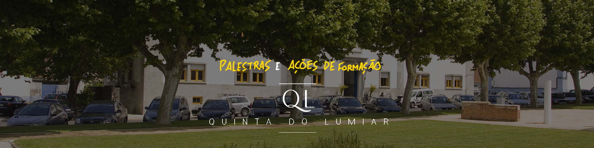

Nesta página serão disponibilizadas todos os tipos de palestras/ ações de formação a decorrer no âmbito do campus do Lumiar
Lembrando que este tipo de eventos é algo importante a nível de futuro académico e proffisional. A troca de conhecimentos também ela é um aprendizado.

A Feira de Emprego ISTEC Lisboa decorre todos os anos entre Novembro e Dezembro.
Ao todo, são mais de 30 empresas que marcam presença neste evento, num ambiente mais informal e de partilha, com centenas de oportunidades de trabalho e estágio, ajustadas aos perfis dos demais estudantes.
Os alunos de CTeSP´s, Licenciaturas, Mestrado e Pós-Graduações do ISTEC, terão a oportunidade de contactar diretamente com os profissionais de TI e de recursos humanos de empresas de diversos setores da nossa economia, com especial incidência na tecnologia.
A quinta do Lumiar está localizada no campus lumiar, Alameda das Linhas de Torres 179, 1750-142 Lisboa.